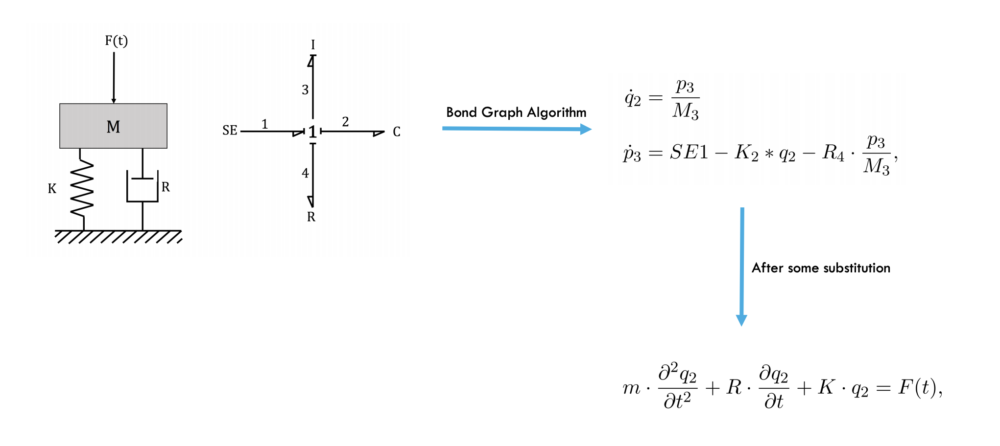
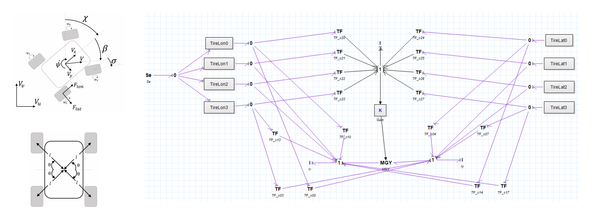
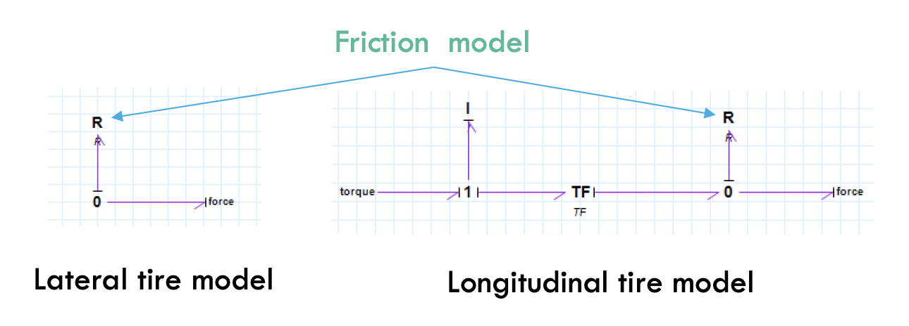
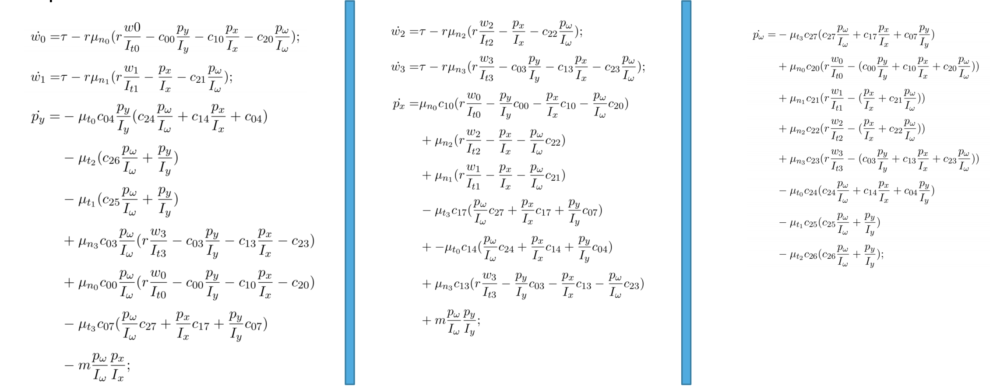
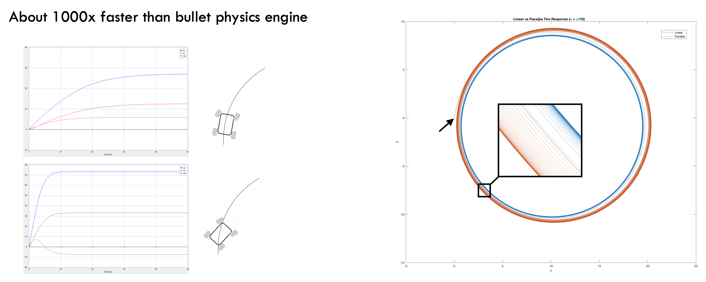

Dynamic Modeling of AWD CAR¶
I am fascinated by Bond-Graphs and how capable they are, They are a graph representation of dynamics/kinematics and they work for electrical, mechanical and even chemical systems.
if you are familiar with mass-spring-damper system dynamics, this is how a bond graph for that system looks like,
{kind=link}
very simple right? one connection node in the middle and four other elements.
I used similar techniques to extract a detailed model for an all wheel drive car, the graph looks like
{kind=link}
and lateral and longitudinal friction models can be drawn as (based on stribeck friction model)
{kind=link}
and eventually you can use a software package to convert the graph to analytical equations (I used 20Sim). one could simpy write a solver themselves.
{kind=link}
Runnig some simulations of this ODE gives reasonable trajectories for the vehicle. Here is a simulation of one equilibrium point on the equilibrium manifold
{kind=link}
You can find a c++ implementation of mentione ODE here